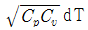
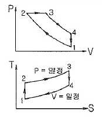
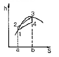
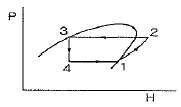
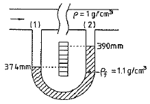
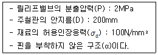

에너지관리기사 (2013-09-28 기출문제)
1과목: 연소공학
1. 고체연료를 사용하는 어느 열기관의 출력이 3000kW이고 연료소비율이 매시간 1400kg 일 때 이 열기관의 열효율은 약 몇 % 인가? (단, 고체연료의 중량비는 C=73%, H=4.5%, O=8%, S=2%, W=4% 이다.)(오류 신고가 접수된 문제입니다. 반드시 정답과 해설을 확인하시기 바랍니다.)
- 27.6
- 28.8
- 30.3
- 32.3
(정답률: 39%)

2. 고열원의 400℃, 저열원이 15℃인 카르노 열기관에서 저열원의 온도를 15℃로 유지하면서 열효율을 70%로 증가시키려면 고열원의 온도는 몇 ℃가 되어야 하는가?
- 587
- 687
- 787
- 887
(정답률: 60%)
3. 로터리 버너를 장시간 사용하였더니 노벽에 카본이 많이 붙어 있었다. 다음 중 주된 원인은?
- 공기비가 너무 컸다.
- 화염이 닿는 곳이 있었다.
- 연소실 온도가 너무 높았다.
- 중유의 예열 온도가 너무 높았다.
(정답률: 90%)
4. 연료 1kg당 소요 이론공기량이 10.25Sm3, 이론 배기가스량이 10.77Sm3, 공기비가 1.4일 때 실제 배기가스량은 약 몇 Sm3/kg인가? (단, 수증기량은 무시한다.)
- 13
- 14
- 15
- 16
(정답률: 57%)
5. 산포식 스토커로 석탄을 연소시킬 때 연소층은 어떤 순서로 형성되는가?
- 건조층 → 환원층 → 산화층 → 회층
- 환원층 → 건조층 → 산화층 → 회층
- 회층 → 건조층 → 환원층 → 산화층
- 산화층 → 환원층 → 건조층 → 회층
(정답률: 60%)
6. 불꽃연소(Flaming combustion)에 대한 설명으로 틀린 것은?
- 연소사면체에 의한 연소이다.
- 연소속도가 느리다.
- 연쇄반응을 수반한다.
- 가솔린 등의 연소가 이에 해당한다.
(정답률: 87%)
7. 다음 중 부생가스가 아닌 것은?
- 코크스로가스
- 고로가스
- 발생로가스
- 전로가스
(정답률: 66%)
8. 증기의 성질에 대한 설명으로 틀린 것은?
- 증기의 압력이 높아지면 증발열이 커진다.
- 증기의 압력이 높아지면 현열이 커진다.
- 증기의 압력이 높아지면 엔탈피가 커진다.
- 증기의 압력이 높아지면 포화온도가 높아진다.
(정답률: 58%)
9. 연료의 성분이 어떤 경우에 총(고위)발열량과 진(저위)발열량이 같아지는가?
- 수소만인 경우
- 수소와 일산화탄소인 경우
- 일산화탄소와 메탄인 경우
- 일산화탄소와 유황의 경우
(정답률: 71%)
10. 다음 중 기상폭발에 해당되지 않는 것은?
- 가스폭발
- 분무폭발
- 분진폭발
- 수증기폭발
(정답률: 80%)
11. 최소착화에너지(MIE)의 특징에 대한 설명으로 옳은 것은?
- 최소착화에너지는 압력증가에 따라 감소한다.
- 질소농도의 증가는 최소착화에너지를 감소시킨다.
- 산소농도가 많아지면 최소착화에너지는 증가한다.
- 일반적으로 분진의 최소착화에너지는 가연성가스 보다 작다.
(정답률: 73%)
12. 프로판(C3H8) 1Sm3의 연소에 필요한 이론공기량(Sm3)은?
- 13.9
- 15.6
- 19.8
- 23.8
(정답률: 69%)
13. 중유연료의 연소 시 무화에 수증기를 사용하는 경우에 대한 설명으로 틀린 것은?
- 고압무화가 가능하므로 무화 효율이 좋다.
- 고압무화할수록 무화 매체량이 적어도 되므로 대용량 보일러에 사용된다.
- 고점도의 기름도 쉽게 무화시킬 수 있다.
- 소형보일러 및 중소요로 용에는 공기무화 보다 유리하다.
(정답률: 67%)
14. 열병합 발전소에서 쓰레기 소각열을 이용하는 곳이 많다. 우리나라 쓰레기(도시폐기물)의 발열량은 얼마 정도인가?
- 500 ~ 1000kcal/kg
- 1000 ~ 2000kcal/kg
- 2000 ~ 5000kcal/kg
- 5000 ~ 11000kcal/kg
(정답률: 74%)
15. 연소에서 고온부식의 발생에 대한 설명으로 옳은 것은?
- 연료 중 황분의 산화에 의해서 일어난다.
- 연료의 연소 후 생기는 수분이 응축해서 일어난다.
- 연료 중 수소의 산화에 의해서 일어난다.
- 연료 중 바나듐의 산화에 의해서 일어난다.
(정답률: 76%)
16. 석탄 연소 시 발생하는 버드네스트(blrdnest)현상은 주로 어느 전열면에서 가장 많은 피해를 일으키는가?
- 과열기
- 공기예열기
- 급수예열기
- 화격자
(정답률: 83%)
17. 어떤 연도가스의 조성을 분석하였더니 CO2 : 11.9%, CO : 1.6%, 02 : 4.1%, N2 : 82.4% 이었다. 이 때 과잉공기의 백분율은 얼마인가? (단, 공기 중 질소와 산소의 부피비는 79 : 21 이다.)
- 15.7%
- 17.7%
- 19.7%
- 21.7%
(정답률: 63%)
18. 연소를 계속 유지시키는데 필요한 조건을 가장 바르게 설명한 것은?
- 연료에 산소를 공급하고 착화온도 이하로 억제한다.
- 연료에 발화온도 미만의 저온 분위기를 유지시킨다.
- 연료에 산소를 공급하고 착화온도 이상으로 유지한다.
- 연료에 공기를 접촉시켜 연소속도를 저하시킨다.
(정답률: 89%)
19. 1mol의 이상기체(Cv=3/2 R)가 40℃, 35atm으로부터 1atm까지 단열 가역적으로 팽창하였다. 최종 온도는 약 몇 K가 되는가?
- 75
- 88
- 98
- 107
(정답률: 46%)
20. CO2max=19.0%, CO2=10.0%, O2=3.0% 일 때 과잉공기 계수(m)는 얼마인가?
- 1.25
- 1.35
- 1.46
- 1.90
(정답률: 72%)
2과목: 열역학
21. 이상기체에서 엔탈피의 미소변화 dh는 어떻게 표시되는가?
- dh = CvdT
- dh =

- dh = CpdT
- dh = (Cp/Cv) dT
(정답률: 58%)
22. 냉동기가 저온에서 80kcal를 흡수하고 고온에서 120kcal를 방출할 때 성능계수(COP)는 얼마인가?
- 0
- 1
- 2
- 3
(정답률: 78%)
23. 이상적인 증기동력 사이클인 랭킨사이클을 이루는 과정이 아닌 것은?
- 펌프에서의 등엔트로피 압축
- 보일러에서의 정압 가열
- 터빈에서의 등온 팽창
- 응축기에서의 정압 방열
(정답률: 68%)
24. 그림의 열기관 사이클(cycle)에 해당되는 것은?

- 오토(Otto) 사이클
- 디젤(Diesel) 사이클
- 랭킨(Rankine) 사이클
- 스터얼링(Stirling) 사이클
(정답률: 51%)
25. 다음 그림은 랭킨사이클의 h-s선도이다. 등엔트로피 팽창과정을 나타내는 것은?

- 1 → 2
- 2 → 3
- 3 → 4
- 4 → 1
(정답률: 60%)
26. 열역학 제2법칙의 내용과 직접적인 관련이 없는 것은?
- 엔트로피의 정의
- 비가역과정의 생성 엔트로피
- 자연 발생적인 열의 흐름 방향
- 내부 에너지의 정의
(정답률: 74%)
27. 과열온도조절법에 대한 설명으로 틀린 것은?
- 과열저감기를 사용하는 방식
- 댐퍼에 의한 열가스 조절에 의한 방식
- 버너의 위치변경 또는 사용버너의 변경에 의한 방식
- 연소용 공기의 접촉을 가감하는 방식
(정답률: 51%)
28. 고체 용기가 압력 300kPa, 온도 31℃의 가스로 충만되어 있다. 그 가스의 일부를 빼내었더니 용기 내의 압력이 100kPa이고, 온도는 10℃가 되었다면, 빠져나간 가스량은 전체 가스량의 약 몇 %인가? (단, 가스는 이상기체로 간주한다.)
- 36
- 52
- 64
- 73
(정답률: 34%)
29. 그림과 같은 열펌프사이클에서 성능계수는? (단, P는 압력, H는 엔탈피이다.)

- H2-H3 / H2-H1
- H1-H4 / H2-H1
- H1-H3 / H2-H1
- H3-H4 / H2-H1
(정답률: 46%)
30. 압력 200kPa, 온도 25℃의 물이 시간당 200kg씩 혼합실에 들어가 압력 200kPa의 건포화 수증기와 혼합되어 45℃의 물로 배출된다. 시간당 수증기 공급량을 몇 kg하여야 하는가? (단, 압력 200kPa에서 포화온도가 120℃, 포화수증기의 엔탈피는 2703kJ/kg이고 열손실은 없으며 액체상태 물의 평균비열은 4.184kJ/kg·K 이다.)
- 7.25
- 5.55
- 5.13
- 4.25
(정답률: 45%)
31. 어떤 상태에서 질량이 반으로 줄면 강도성질(intensive property) 상태량의 값은?
- 반으로 줄어든다.
- 2배로 증가한다.
- 4배로 증가한다.
- 변하지 않는다.
(정답률: 66%)
32. 15Nm3의 공기가 동일한 압력으로 0℃에서 100℃로 되었다면 엔탈피 변화량은 약 몇 kJ인가? (단, 공기의 기체 상수는 0.287kJ/kg·K. 정압비열은 1.0kJ/kg·K로 한다.)
- 1530kJ
- 1940kJ
- 4660kJ
- 10440kJ
(정답률: 47%)
33. 어떤 압력의 포화수를 가열하여 동일한 압력의 건포화증기로 만들고자 한다. 이 때 소요되는 증발열이 가장 큰 포화수는 다음 중 어떤 압력일 경우인가?
- 0.5kgf/cm2
- 1.0kgf/cm2
- 10kgf/cm2
- 100kgf/cm2
(정답률: 64%)
34. Carnot 사이클은 2개의 등온과정과 또 다른 2개의 어느 과정으로 구성되는가?
- 정압과정
- 등적과정
- 단열과정
- 폴리트로픽과정
(정답률: 78%)
35. 높이 50m인 폭포에서 물이 낙하할 때 위치에너지가 운동에너지로 변했다가 다시 열에너지로 변한다면 물의 온도는 대략 얼마나 올라가는가?
- 0.02℃
- 0.12℃
- 0.22℃
- 0.32℃
(정답률: 58%)
36. 브레이튼 사이클(Brayton cycle)은 어떤 기관에 대한 이상적인 사이클인가?
- 가스터빈 기관
- 증기 기관
- 가솔린 기관
- 디젤 기관
(정답률: 78%)
37. 성능계수(coefficient of performance)가 2.5인 냉동기가 있다. 15냉동톤(refrigeration ton)의 냉동용량을 얻기 위해서 냉동기에 공급해야할 동력(kW)은? (단, 1 냉동톤은 3.861kW 이다.)
- 20.5
- 23.2
- 27.5
- 29.7
(정답률: 70%)
38. 500K의 고온 열저장조와 300K의 저온 열저장조 사이에서 작동되는 열기관이 낼 수 있는 최대 효율은?
- 100%
- 80%
- 60%
- 40%
(정답률: 63%)
39. 30℃에서 기화잠열이 173kJ/kg인 어떤 냉매의 포화액-포화증기 혼합물 4kg을 가열하여 건도가 20%에서 30%로 증가되었다. 이 과정에서 냉매의 엔트로피증가량은 몇 kJ/K 인가?
- 69.2
- 2.31
- 0.228
- 0.⑤7
(정답률: 40%)
40. 온도 100℃, 압력 200kPa의 공기(이상기체)가 정압과정으로 최종온도가 200℃가 되었을 때 공기의 부피는 처음부피의 약 몇 배가 되는가?
- 1.12
- 1.27
- 1.52
- 2
(정답률: 58%)
3과목: 계측방법
41. 과열증기의 온도조절방법이 아닌 것은?
- 습증기의 일부를 과열기로 보내는 방법
- 연소가스의 유량을 가감하는 방법
- 과열기 전용화로를 설치하는 방법
- 과열증기의 일부를 배출하는 방법
(정답률: 60%)
42. 다음 각 물리량에 대한 SI 유도단위의 기호로 틀린 것은?
- 압력-파스칼(pascal)
- 에너지-칼로리(calorie)
- 일률-와트(watt)
- 광선속-루멘(lumen)
(정답률: 83%)
43. 속도의 수두차를 측정하는 유량계가 아닌 것은?
- 피토관(Pitot tube)
- 로터미터(Rota meter)
- 오리피스미터(Orifice meter)
- 벤투리미터(Venturi meter)
(정답률: 75%)
44. 염화리튬이 공기 수증기압과 평형을 이룰 때 생기는 온도 저하를 저항온도계로써 측정하여 습도를 알아내는 습도계는?
- 아스만 습도계
- 듀셀 노점계
- 전기저항식 습도계
- 광전관식 노점계
(정답률: 75%)
45. 오차의 정의로서 맞는 것은?
- 오차 = 측정값 - 참값
- 오차 = 참값 / 측정값
- 오차 = 참값 + 측정값
- 오차= 측정값 × 참값
(정답률: 86%)
46. 다음 금속 중 측온(測溫)저항체로 쓰이지 않는 것은?
- Cu
- Fe
- Ni
- Pt
(정답률: 67%)
47. 액주에 의한 압력측정에서 정밀 측정을 위한 보정(補正)으로 반드시 필요로 하지 않는 것은?
- 모세관 현상의 보정
- 중력의 보정
- 온도의 보정
- 높이의 보정
(정답률: 85%)
48. 관로(官路)에 설치된 오리피스 전후의 압력차는?
- 유량의 제곱에 비례한다.
- 유량의 제곱근에 비례한다.
- 유량의 제곱에 반비례한다.
- 유량의 제곱근에 반비례한다.
(정답률: 60%)
49. 미리 정해진 순서에 따라 순차적으로 진행하는 제어방식은?
- 시퀀스 제어(Sequence control)
- 피드백 제어(Feedback control)
- 피드포워드 제어(Feed forward control)
- 적분 제어(Integral control)
(정답률: 84%)
50. 다음 중 SI 기본단위를 바르게 표현한 것은?
- 길이-밀리미터
- 질량-그램
- 시분-분
- 전류-암페어
(정답률: 85%)
51. 시이드(sheath)형 측온저항체의 특성이 아닌 것은?
- 응답성이 빠르다.
- 진동에 강하다.
- 가소성이 없다.
- 국부적인 측온에 사용된다.
(정답률: 65%)
52. 원인을 알 수 없는 오차로서 측정할 때 마다 측정값이 일정하지 않고 분포현상을 일으키는 오차는?
- 계량기 오차
- 과오에 의한 오차
- 계통적 오차
- 우연 오차
(정답률: 88%)
53. 내경 300mm인 원관 내에 3kg/s의 공기가 유입되고 있다. 이 때 관내의 압력 200kPa, 온도 25℃, 공기기체상수는 287J/kg·K이라고 할 때 공기평균속도는 약 몇 m/s인가?
- 1.8
- 2.4
- 18.2
- 23.5
(정답률: 42%)
54. 물이 흐르고 있는 공정 상의 두 지점에서 압력 차이를 측정하기 위해 그림과 같은 압력계를 사용하였다. 압력계 내 액의 비중은 1.1이고 양쪽 관의 높이가 그림과 같을 때 지점(1) 과 (2) 에서의 압력 차이는 몇 dyne/cm2인가?

- 5
- 48
- 157
- 1568
(정답률: 50%)
55. 다음 중 용적식 유량계가 아닌 것은?
- 습식가스미터
- 원판식 유량계
- 아뉴바 유량계
- 오벌식 유량계
(정답률: 59%)
56. 다음 중 비접촉식 온도계가 아닌 것은?
- 광고 온도계(Optical pyrometer)
- 바이메탈 온도계(Bimetal pyrometer)
- 방사 온도계(Radiation pyrometer)
- 광전관식 온도계(Photoeletric pyrometer)
(정답률: 79%)
57. 전자유량계의 특징에 대한 설명 중 틀린 것은?
- 압력손실이 거의 없다.
- 응답이 매우 빠르다.
- 높은 내식성을 유지할 수 있다.
- 모든 액체의 유량 측정이 가능하다.
(정답률: 78%)
58. 계측에 있어 측정의 참값을 판단하는 계의 특성 중 동특성에 해당하는 것은?
- 감도
- 직선성
- 히스테리시스 오차
- 시간지연과 동오차
(정답률: 61%)
59. 다음 각 압력계에 대한 설명으로 틀린 것은?
- 벨로우즈 압력계는 탄성식 압력계이다.
- 다이어프램 압력계의 박판재료로 인청동, 고무를 사용할 수 있다.
- 침종식 압력계는 압력이 낮은 기체의 압력 측정에 적당하다.
- 탄성식 압력계의 일반교정용 시험기로는 전기식 표전압력계가 주로 사용된다.
(정답률: 66%)
60. 오벌(oval)식 유량계의 특징에 대한 설명으로 틀린 것은?
- 타원형 치차의 맞물림을 이용하므로 비교적 측정정도가 높다.
- 기체유량 측정은 불가능하다.
- 유량계의 앞부분에 여과기(strainer)를 설치하지 않아도 된다.
- 설치가 간단하고 내구력이 우수하다.
(정답률: 79%)
4과목: 열설비재료 및 관계법규
61. 다음 중 열전도율이 가장 적은 것은?
- 철
- 고무
- 물
- 공기
(정답률: 79%)
62. 터널가마(Tunnel kiln)의 특징에 대한 설명 중 틀린 것은?
- 연속식 가마이다.
- 사용연료에 제한이 없다.
- 대량생산이 가능하고 유지비가 저렴하다.
- 노내 온도조절이 용이하다.
(정답률: 81%)
63. 에너지이용합리화 관련법에서 정한 검사를 받아야 하는 소형온수보일러의 기준은?
- 가스사용량이 15kg/h를 초과하는 보일러
- 가스사용량이 17kg/h를 초과하는 보일러
- 가스사용량이 19kg/h를 초과하는 보일러
- 가스사용량이 21kg/h를 초과하는 보일러
(정답률: 86%)
64. 에너지이용합리화법에 명시된 에너지관리공단의 설립목적은?
- 시, 도의 기능을 대신하기 위하여
- 정부의 과대한 업무를 일부 분담키 위하여
- 에너지수급 및 동향을 효율적인 방안으로 관리하기 위하여
- 에너지이용합리화 사업을 효율적으로 추진하기 위하여
(정답률: 71%)
65. 에너지이용합리화관련법상 열사용기자재에 해당하는 것은?
- 선박용 보일러
- 고압가스 압력용기
- 철도차량용 보일러
- 금속요로
(정답률: 66%)
66. 다음 보온재 중 가장 낮은 온도에서 사용될 수 있는 것은?
- 석면
- 규조토
- 우레탄 폼
- 탄산마그네슘
(정답률: 85%)
67. 에너지이용합리화법상의 “목표에너지원단위”란?
- 열사용기기당 단위시간에 사용할 열의 사용 목표량
- 각 회사마다 단위기간 동안 사용할 열의 사용 목표량
- 에너지를 사용하여 만드는 제품의 단위당 에너지사용 목표량
- 보일러에서 증기 1톤을 발생할 때 사용할 연료의 사용목표량
(정답률: 89%)
68. 실리카(silica)의 특징에 대한 설명으로 틀린 것은?
- 온도변화에 따라 결정형이 달라진다.
- 광화제가 전이를 촉진시킨다.
- 고온전이형이 되면 비중이 작아진다.
- 규석은 가장 안정한 광물로서 온도변화의 영향을 받지 않는다.
(정답률: 72%)
69. 효율관리기자재 중 최저 소비효율기준에 미달하거나 최대 사용량 기준을 초과한 것의 생산 또는 판매 금지 명령을 위반한 자에 해당하는 벌칙은?
- 2000만원 이하의 벌금
- 500만원 이하의 벌금
- 1000만원 이하의 과태료
- 500만원 이하의 과태료
(정답률: 53%)
70. 옥내온도는 15℃, 외기온도가 5℃일 때 콘크리트 벽(두께 10cm, 길이 10m 및 높이 5m)을 통한 열손실이 1500kcal/h이라면 외부 표면 열전달계수는 약 몇 kcal/m2·h·℃인가? (단, 내부표면 열전달계수는 8.0kcal/m2·h·℃이고 콘크리트 열전도율은 0.7443kcal/m·h·℃이다.)
- 11.5
- 13.5
- 15.5
- 17.5
(정답률: 47%)
71. 신축이음에 대한 설명 중 틀린 것은?
- 슬리브형은 단식과 복식의 2종류가 있으며 고온, 고압에 사용한다.
- 루프형은 고압에 잘 견디며 주로 고압증기의 옥외 배관에 사용한다.
- 벨로즈형은 신축으로 인한 응력을 받지 않는다.
- 스위블형은 온수 또는 저압증기의 배관에 사용하며 큰 신축에 대하여는 누설의 염려 가 있다.
(정답률: 71%)
72. 다음 중 에너지 저장의무 부과 대상자가 아닌 자는? (문제 오류로 실제 시험에서는 2,3번이 정답처리 되었습니다. 여기서는 2번을 누르면 정답 처리 됩니다.)
- 전기사업법에 의한 전기 사업자
- 석유사업법에 의한 석유정제업자
- 액화가스사업법에 의한 액화가스 사업자
- 연간 2만 석유환산톤의 에너지 다소비 사업자
(정답률: 69%)
73. 에너지절약전문기업의 등록이 취소된 에너지절약전문기업은 원칙적으로 등록 취소일로부터 얼마의 기간이 지나면 다시 등록을 할 수 있는가?
- 1년
- 2년
- 3년
- 5년
(정답률: 82%)
74. 볼밸브(ball valve)의 특징에 대한 설명으로 틀린 것은?
- 유로가 배관과 같은 형상으로 유체의 저항이 적다.
- 밸브의 개폐가 쉽고 조작이 간편하여 자동조작밸브로 활용된다.
- 이음쇠 구조가 없기 때문에 설치공간이 작아도 되고 보수가 쉽다.
- 밸브대가 90° 회전하므로 패킹과의 원주방향 움직임이 크기 때문에 기밀성이 약하다.
(정답률: 82%)
75. 검사대상기기 설치자가 해당기기를 검사를 받지 않고 사용하였을 경우의 벌칙으로 맞는 것은?
- 2년 이하의 징역 또는 2천만원 이하의 벌금
- 1년 이하의 징역 또는 1천만원 이하의 벌금
- 2천만원 이하의 과태료
- 1천만원 이하의 과태료
(정답률: 74%)
76. 염기성 슬래그나 용융금속에 대한 내침식성이 크므로 염기성 제강로의 노재로 주로 사용되는 내화벽돌은?
- 마그네시아질 벽돌
- 규석 벽돌
- 샤모트 벽돌
- 알루미나질 벽돌
(정답률: 78%)
77. 국가에너지절약추진위원회의 구성에 해당하지 않는 자는?
- 해양수산부차관
- 교육부차관
- 한국지역난방공사 사장
- 한국가스안전공사 사장
(정답률: 60%)
78. 용광로의 원료 중 코크스의 역할로 옳은 것은?
- 탈황작용
- 흡탄작용
- 매용제(煤熔劑)
- 탈산작용
(정답률: 67%)
79. 효율관리기자재의 제조업자가 효율관리시험기관으로부터 측정결과를 통보받은 날 또는 자제측정을 완료한 날부터 며칠 이내에 에너지관리공단에 신고하여야 하는가?(관련 규정 개정전 문제로 여기서는 기존정답인 3번을 누르면 정답 처리됩니다. 자세한 내용은 해설을 참고하세요.)
- 15일
- 30일
- 60일
- 90일
(정답률: 55%)
80. 다이어프램 밸브(diaphragm valve)에 대한 설명이 아닌 것은?
- 화학약품을 차단함으로써 금속부분의 부식을 방지한다.
- 기밀을 유지하기 위한 패킹을 필요로 하지 않는다.
- 저항이 적어 유체의 흐름이 원활하다.
- 유체가 일정 이상의 압력이 되면 작동하여 유체를 분출시킨다.
(정답률: 69%)
5과목: 열설비설계
81. 대류 열전달에서 대류열전달계수(경막계수)의 단위는?
- kcal/℃
- kcal/kg·℃
- kcal/m·h·℃
- kcal/m2·h·℃
(정답률: 67%)
82. 보일러의 부속장치인 이코노마이저에 대한 설명으로 틀린 것은?
- 통풍손실이 발생할 수 있다.
- 저온부식이 발생할 수 있다.
- 증발능력을 상승시킨다.
- 열응력을 증가시킨다.
(정답률: 53%)
83. 보일러 수(水)의 분출의 목적이 아닌 것은?
- 물의 순환을 촉진한다.
- 가성취화를 방지한다.
- 프라이밍 및 포밍을 촉진한다.
- 관수의 pH를 조절한다.
(정답률: 85%)
84. 맞대기 용접은 용접방법에 따라 그루브를 만들어야 한다. 판 두께 10mm에 할 수 있는 그루브의 형상이 아닌 것은?
- V형
- R형
- H형
- J형
(정답률: 82%)
85. 흑체로부터의 복사전열량은 절대온도(T)의 몇 제곱에 비례하는가?
- √2
- 2
- 3
- 4
(정답률: 80%)
86. 피치가 200mm 이하이고, 골의 길이가 38mm 이상인 것의 파형 노통의 종류는?(오류 신고가 접수된 문제입니다. 반드시 정답과 해설을 확인하시기 바랍니다.)
- 모리슨형
- 데이톤형
- 폭스형
- 리즈포지형
(정답률: 72%)
87. 최고사용압력 1.5MPa, 파형 형상에 따른 정수(C)를 1100으로 할 때 노통의 평균지름이 1100mm인 파형노통의 최소 두께는 약 몇 mm인가?
- 10
- 15
- 20
- 25
(정답률: 66%)
88. 다음 중 증기와 응축수의 온도 차이를 이용하여 작동하는 증기트랩은?
- 바이메탈식
- 상향버켓식
- 플로트식
- 오리피스식
(정답률: 65%)
89. 두께 4mm강의 평판에서 고온측 면의 온도가 100℃이고 저온측 면의 온도가 80℃이며 매분당 30000kJ/m2의 전열을 한다고 하면 이 강판의 열전도율은 약 몇 W/m 인가?
- 50
- 100
- 150
- 200
(정답률: 41%)
90. 횡연관식 보일러에서 연관의 배열을 바둑판 모양으로 하는 주된 이유는?
- 보일러 강도상 유리하므로
- 관의 배치를 많게 하기 위하여
- 물의 순환을 양호하게 하기 위하여
- 연소가스의 흐름을 원활하게 하기 위하여
(정답률: 71%)
91. 계산에 사용하는 재료의 허용전단응력은 허용인장응력의 얼마로 하는가?
- 허용전단응력은 허용인정응력의 70%로 한다.
- 허용전단응력은 허용인정응력의 80%로 한다.
- 허용전단응력은 허용인정응력의 90%로 한다.
- 허용전단응력은 허용인정응력과 같게 취한다.
(정답률: 63%)
92. 동일 조건에서 열교환기의 온도효율이 높은 순으로 바르게 나열한 것은?
- 향류 ＞ 직교류 ＞ 병류
- 병류 ＞ 직교류 ＞ 향류
- 직교류 ＞ 향류 ＞ 병류
- 직교류 ＞ 병류 ＞ 향류
(정답률: 84%)
93. 연소실의 체적을 결정할 때 고려하여야 하는 사항으로 가장 거리가 먼 것은?
- 연소실의 열발생률
- 연소실의 열부하(熱負荷)
- 내화벽돌의 내압강도
- 연료의 연소량
(정답률: 65%)
94. 보기에서 제시하는 절단기용 주철관의 최소두께는?

- 3mm
- 4mm
- 5mm
- 6mm
(정답률: 39%)
95. 압력 35kg/cm2, 온도 241.41℃인 물 1kg이 증발하는 동안 비체적이 0.00123m3/kg에서 0.⑤82m3/kg 로 증가하고 엔탈피의 값은 420.25kcal/kg 증가하였다. 1kg의 물로 구성되는 정지계의 내부에너지 변화(kcal/kg)는?
- 352.53
- 373.55
- 397.26
- 408.87
(정답률: 39%)
96. 연소실에서 연도까지 배치된 보일러 부속 설비의 순서를 바르게 나타낸 것은?
- 과열기 → 절탄기 → 공기 예열기
- 절탄기 → 과열기 → 공기 예열기
- 공기 예열기 → 과열기 → 절탄기
- 과열기 → 공기 예열기 → 절탄기
(정답률: 74%)
97. 10ton의 인장하중을 받는 양쪽 덮개판 맞대기 리벳이음이 있다. 리벳의 지름이 15mm, 리벳의 허용전단력이 6kg/mm2일 때 최소 몇 개의 리벳이 필요한가?
- 3
- 5
- 7
- 10
(정답률: 43%)
98. 과열기의 구조에 있어서 과열온도가 약 600℃ 이상에서는 다음 중 어느 강을 주로 사용하는가?
- 탄소강
- 니켈강
- 저망간강
- 오스테나이트계 스테인리스강
(정답률: 71%)
99. 노통보일러에서 경판 두께가 15mm이하인 경우 브레이징 스페이스(Breathing space)는 얼마 이상이어야 하는가?
- 230mm
- 260mm
- 280mm
- 300mm
(정답률: 62%)
100. 기수분리의 방법에 따라 분류하였을 때 다음 중 그 종류로서 가장 거리가 먼 것은?
- 장애판을 이용한 것
- 그물을 이용한 것
- 방향전환을 이용한 것
- 압력을 이용한 것
(정답률: 71%)
Hl=8100C+28600(H-O/8)+2500S-600W=8100*0.73+28600(0.045-0.08/8)+2500*0.02-600-0.04=6940